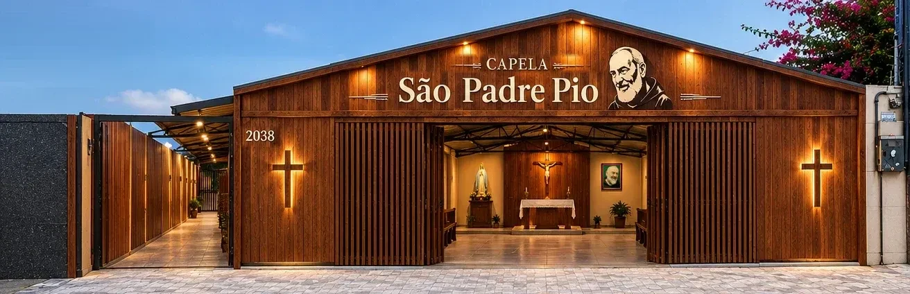
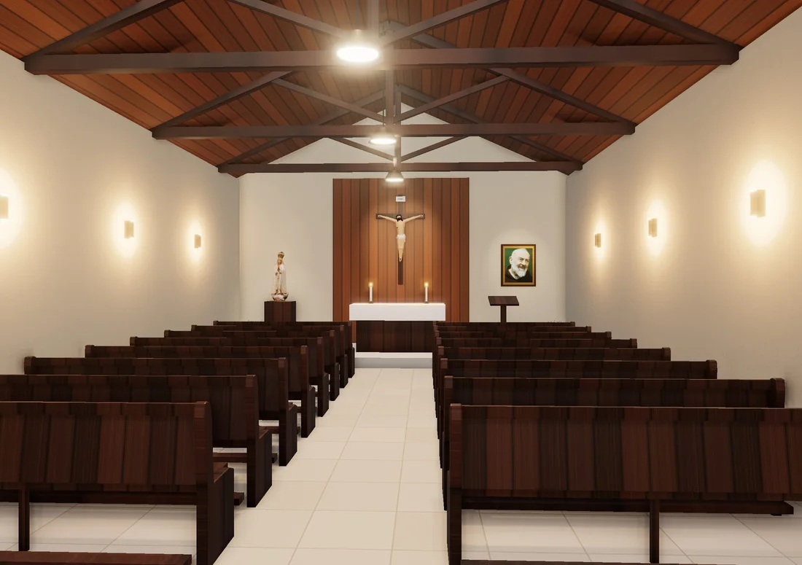
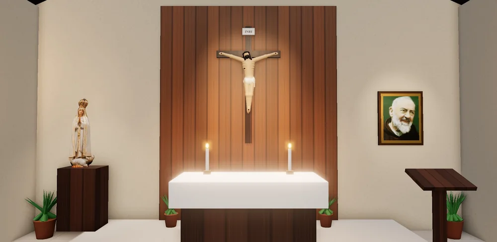
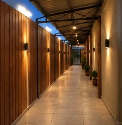
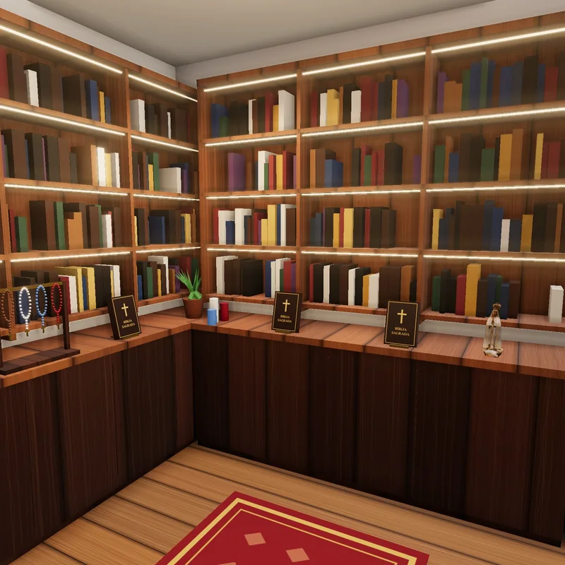
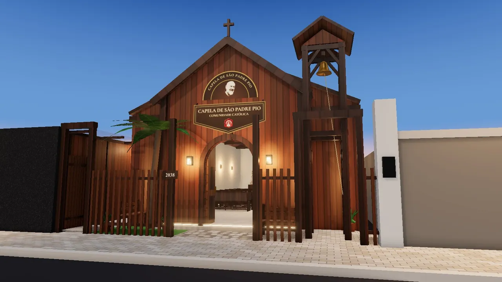

Santa Missa semanal
A Eucaristia no centro da vida da comunidade, toda semana.
No local da nossa sede, na Av. José Leon, 2038, em Fortaleza, vamos construir uma capela dedicada a São Padre Pio de Pietrelcina: um lugar de oração, de Santa Missa e de adoração ao Santíssimo, de portas abertas para todos. Sua doação ajuda a tornar esse projeto realidade.
Toda oferta e toda oração fazem diferença.

Uma capela votiva nasce de um voto: é oferecida a Deus como sinal de gratidão e de confiança, sob a proteção de um santo. A nossa será dedicada a São Padre Pio de Pietrelcina, o frade capuchinho que passou a vida entre o altar e o confessionário e ensinou tantas pessoas a rezar com confiança.
Ela será construída no local da sede da Obra Refúgio de Maria, comunidade católica que evangeliza pela consagração a Jesus pelas mãos de Maria, segundo o método de São Luís Maria Grignion de Montfort. Também evangelizamos pela consagração total a São José, além de outros projetos.
Queremos que seja uma casa simples e acolhedora, onde qualquer pessoa possa entrar, rezar, entregar suas intenções e encontrar consolo.
O projeto tem o apoio do pároco da Paróquia Nossa Senhora da Glória, Pe. Helano Samy da Silva Holanda. Em carta de 19 de junho de 2026, ele convida a comunidade paroquial, empresas, benfeitores e apoiadores a participar da construção.
A oração é a melhor arma que temos; é a chave que abre o coração de Deus.São Padre Pio de Pietrelcina
Uma nave de 8 metros de frente por 15 de profundidade com interior sereno. Ao lado, um corredor externo que segue até as nossas salas e lojinha.




Planta ilustrativa, sem escala técnica
Imagens, planta e passeio 3D são ilustrativos. O projeto final pode passar por ajustes.
Um passeio em 3D feito com as medidas do projeto: da calçada até o altar, passando pelo corredor lateral.

Iniciar passeio 3D Cerca de 50 segundos · funciona no celular e no computadorRepresentação ilustrativa, gerada por computador com as medidas do projeto.
Conforme a carta do pároco, a capela vai acolher a vida de oração e de serviço da comunidade, aberta a todos.
A Eucaristia no centro da vida da comunidade, toda semana.
Momentos de silêncio e de oração diante de Jesus Eucarístico.
Encontros, formação e atividades de evangelização abertos a todos.
Um ponto de apoio para servir quem mais precisa e fortalecer a vida pastoral da região.
Uma nova capela para vivência dos sacramentos: Casamentos, Batizados, Missas particulares e outros momentos.
Aponte a câmera do app do seu banco para o QR Code ou use o Pix Copia e Cola. O valor é você quem escolhe.
Conta da Obra Refúgio de Maria no Banco Sicredi
Ao ler o QR Code, o app do seu banco deve mostrar estas informações:
Além da doação, há muitas maneiras de caminhar conosco nesta obra.
Deixe seu contato para acompanhar a campanha e receber notícias sobre o andamento da obra.
Envie para familiares e amigos. Cada pessoa que conhece o projeto pode se tornar um novo benfeitor.
Reze pela construção da capela e por todos os benfeitores, pedindo a intercessão de São Padre Pio.
Empresas, lojas de materiais e profissionais da construção também podem ajudar. Fale com a gente para combinarmos juntos.
Av. José Leon, 2038 · Fortaleza–CE
Na área pastoral da Paróquia Nossa Senhora da Glória. A capela será erguida no mesmo local onde hoje funciona a nossa sede.
É uma capela oferecida a Deus como fruto de um voto, em ação de graças e em súplica, sob a proteção de um santo. A nossa é dedicada a São Padre Pio de Pietrelcina.
No local da sede da Obra Refúgio de Maria, na Av. José Leon, 2038, em Fortaleza–CE, na área pastoral da Paróquia Nossa Senhora da Glória.
Ao ler o QR Code ou colar o código, o app do seu banco mostra os dados da conta. Confira: CNPJ 60.638.183/0001-05, Sicredi Veredas Cooperativa de Crédito, mensagem “Futura Capela São Padre Pio - ORM” e identificador “PadrePio”. Se algo estiver diferente, não conclua o Pix e fale com a gente pelo WhatsApp (85) 98445-2025.
Sim. O QR Code não tem valor fixo: você digita o valor que puder ofertar. Toda contribuição é bem-vinda.
As doações feitas por este Pix são destinadas à construção e à ambientação da Capela votiva a São Padre Pio. Quem se cadastra como benfeitor recebe notícias sobre o andamento da obra.
As etapas e o cronograma serão divulgados conforme a campanha avançar. Cadastre-se como benfeitor para acompanhar as novidades.
Sim! Reze pela obra, divulgue a campanha e, se puder, ofereça seu tempo ou seus talentos. Fale com a gente pelo WhatsApp.
São ilustrações feitas a partir das medidas do projeto: nave de 8 m por 15 m e corredor lateral de 1 m à esquerda. O projeto final pode passar por ajustes.
Una-se a esta missão: doe, compartilhe e reze pela construção da Capela votiva a São Padre Pio.
São Padre Pio, rogai por nós!